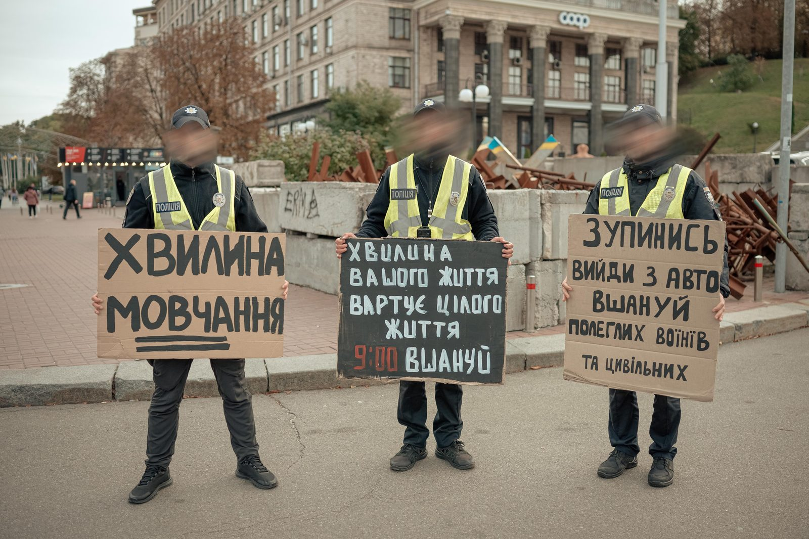
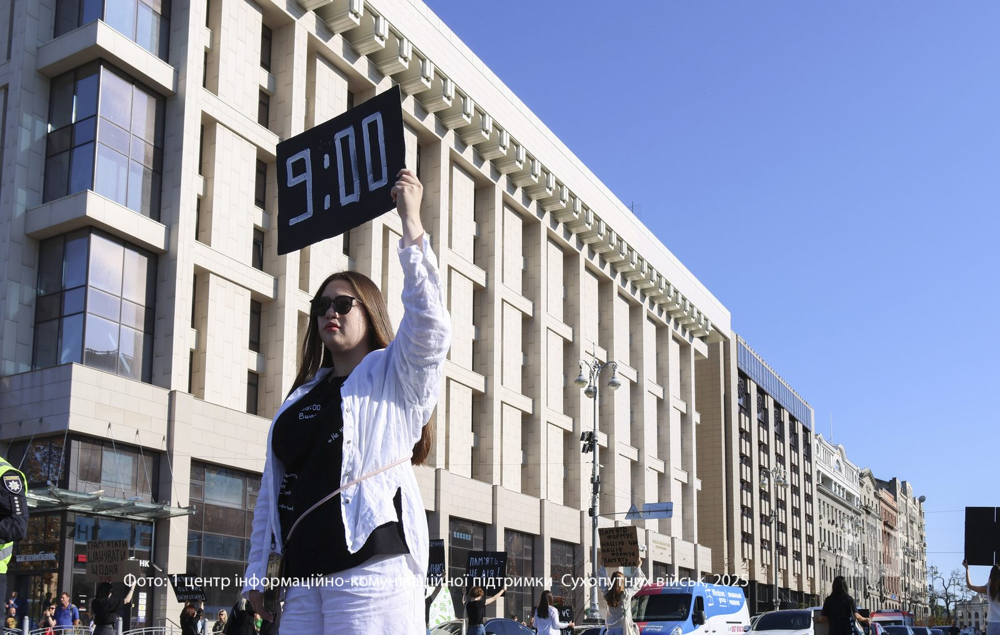
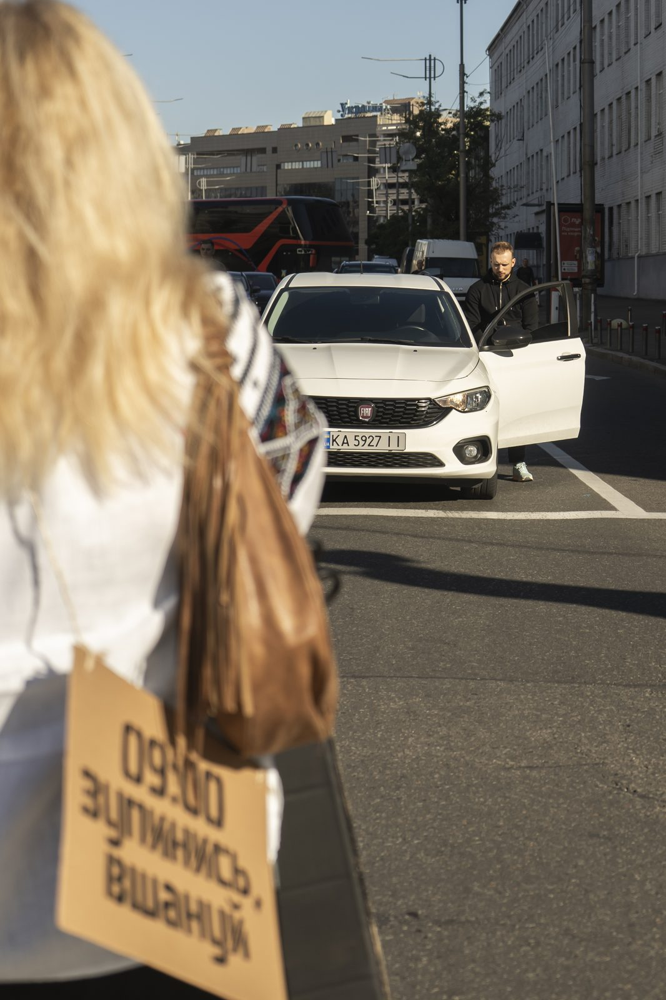
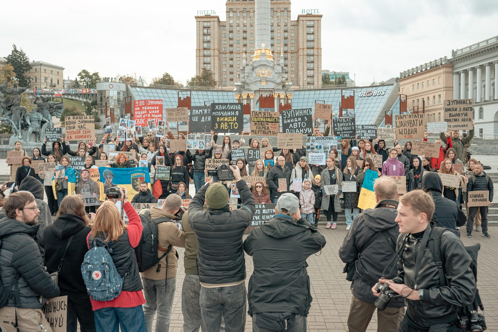

ПРО НАС
Пам’ять живе у вчинках
Ми розвиваємо відкриту, людяну й зрозумілу культуру пам’яті — без пафосу та емоційного тиску.
Наші принципиКУЛЬТУРА ПАМ’ЯТІ
EST. 2022





Пам’ять — це дієслово.
Гортай далі · 01 → 05
01 — ПІДХІД
9:00 · 2022 → 2026
Працюємо з людьми, громадами, бізнесами та інституціями, щоб пам’ять була не разовою церемонією, а частиною щоденного життя.
ПРО НАС
Ми розвиваємо відкриту, людяну й зрозумілу культуру пам’яті — без пафосу та емоційного тиску.
Наші принципиСПІЛЬНОТА
Об’єднуємо тих, хто не дозволяє життям перетворитися на статистику й продовжує справу пам’яті.
Наші проєктиНАША МЕТА
Поєднуємо освіту, особисті історії, міський простір і щоденні практики. Так пам’ять стає не завершенням, а відповідальною дією в сьогоденні.
02 — НАПРЯМКИ
ЩО МИ РОБИМО
09:00
Допомагаємо громадам зробити щоденну хвилину мовчання видимою, спільною та зрозумілою.
ЗНАННЯ
Створюємо дорожні карти, лекції та практичні матеріали для міст, шкіл, бізнесів і державних установ.
ІМ’Я
Повертаємо кожній полеглій людині її голос, характер і місце в спільній пам’яті.
МІСТО
Інтегруємо пам’ять у повсякденний простір через знаки, таблички та делікатні міські практики.

03 — ПРОЄКТИ
ВИБРАНІ СПРАВИ

P001
P005
P007
04 — ПРИНЦИПИ
НАША ОСНОВА
01
Говоримо про особистість, її життя, вибір і зв’язки з іншими людьми.
02
Кожна ініціатива має давати людині зрозумілий спосіб долучитися.
03
Будуємо практики, які залишаються частиною життя після пам’ятної дати.
05 — ДОЛУЧИТИСЯ
Розкажи про свій проєкт, запроси нас до співпраці або підтримай роботу організації.
Написати нам